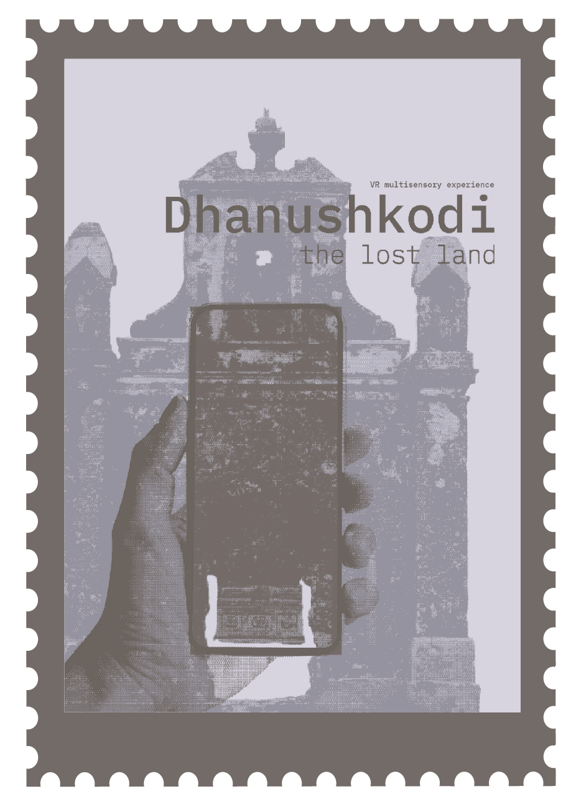
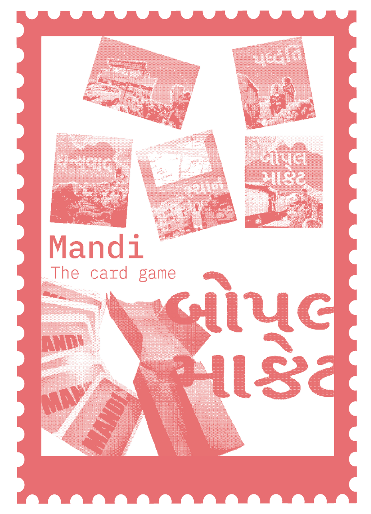
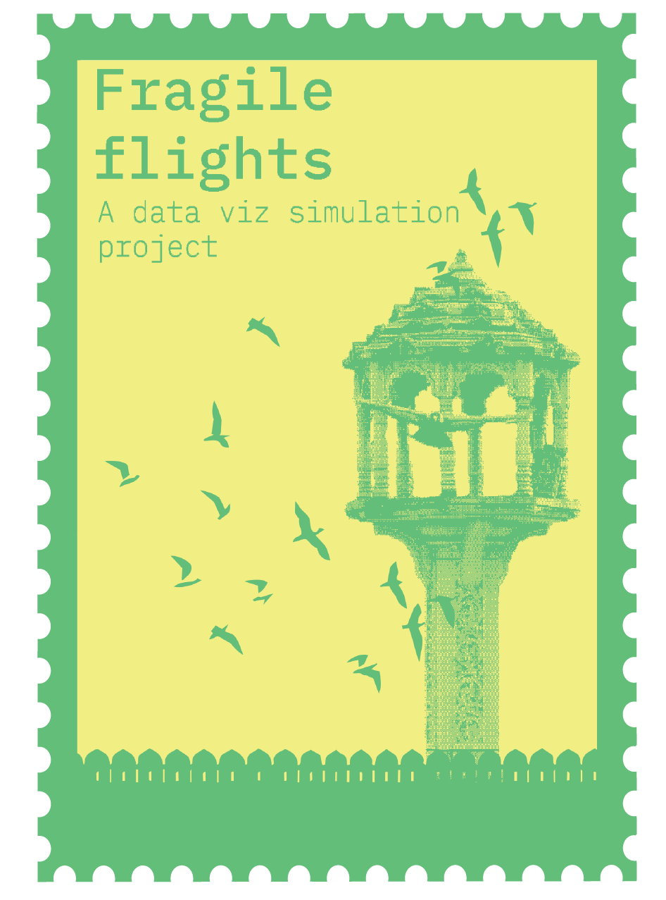
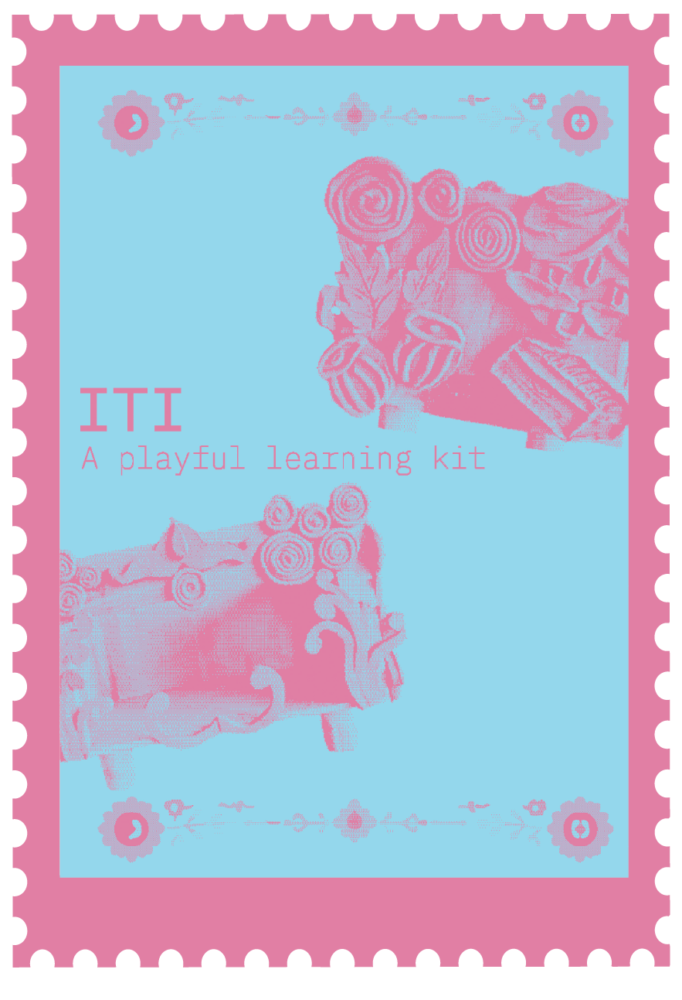
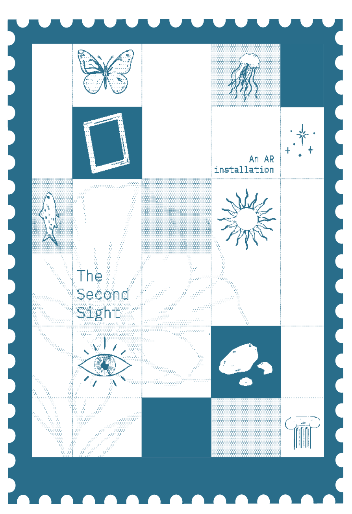
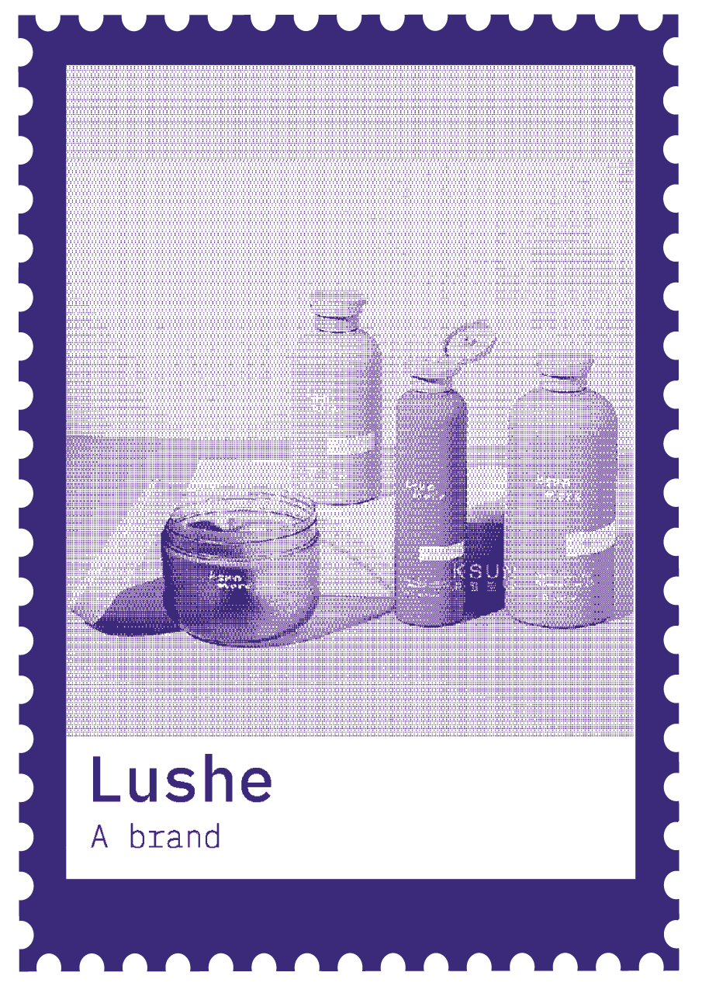

I’m a multimedia experience designer driven by curiosity, storytelling and human connection. I explore the intersection of visuals, interaction and emerging technologies to create meaningful experiences, finding inspiration in everyday details and the stories often overlooked.


Walk through a town the sea took back: a multisensory VR experience that rebuilds Dhanushkodi from memory, place and the aftermath of the 1964 cyclone, where gesture-based interactions surface fragments of what was lost.
View Project

A card game for understanding the dynamics of Bopal market, Ahmedabad.
View Project

A data visualisation of air quality around Ahmedabad and how it affects birds, presented through a graphical simulation.
View Project

Build the puppets, then watch the story begin: a DIY puppet theatre kit that brings Indian folk stories to children through making, performing and AR.
View Project

Discover different perspectives on the same images through AR and the opinions of others, creating an invisible community.
View Project

A haircare branding project exploring the brand's visual identity, packaging and storytelling.
View Project